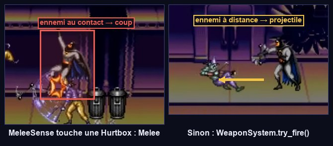
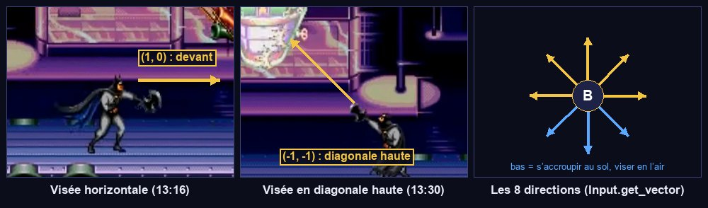
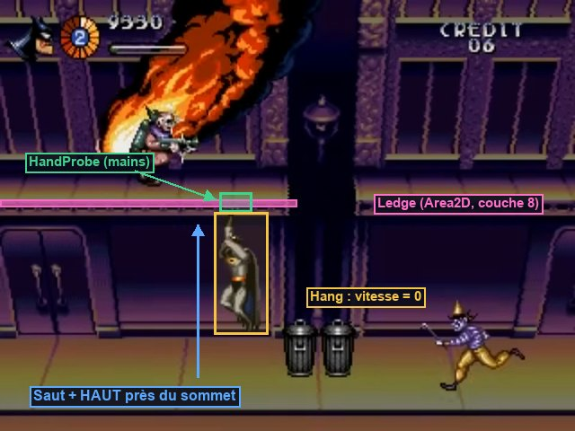

Combat, accroche et dégâts
Batman apprend à frapper, à s'accrocher sous le balcon, à encaisser, à mourir et à fêter sa victoire. On branche les composants de l'étape 02 sur lui, on ajoute six états, et on construit une cible d'entraînement pour tout vérifier sans attendre les ennemis.
Ce que tu vas apprendre
Godot 4
Resourcepersonnalisée et fichiers.tresget_overlapping_areas(),has_overlapping_areas()- Scripts qui héritent d'un script (
super) - L'éditeur
SpriteFrameset lesAtlasTexture
Développement de jeu
- État contre capacité
- L'attaque contextuelle
- Préparation, images actives, récupération
- Recul et invincibilité temporaire
- Compteurs plutôt que minuteries asynchrones
Préparer Batman
5.1 · Ce qui est un état, ce qui n'en est pas
Batman tire en courant, en sautant, accroupi ou suspendu. Si « tirer » était un état, il en faudrait « courir-en-tirant », « sauter-en-tirant »… Le tir est donc une capacité : une fonction (try_attack()) que les états autorisés appellent. En revanche, la mêlée au sol est un état : Batman s'arrête pour frapper, il ne peut rien faire d'autre pendant ce temps. La question à se poser : « pendant cette action, le personnage peut-il faire autre chose ? »
D'après le manuel du jeu, un seul bouton fait deux choses : un coup au contact si un ennemi est tout près, un projectile sinon. Il faut donc une zone qui répond à la question « un ennemi est-il à portée de poing ? » : MeleeSense.

MeleeSense détecte une Hurtbox ennemie, c'est un coup ; sinon, un projectile.5.2 · Ajouter les nœuds
- Ouvre
player.tscnet ajoute les nœuds marqués ★ :
Player (CharacterBody2D) player.gd · couche 3 · masque 1+2 · groupe « player »
├── Sprite (AnimatedSprite2D) offset y = -24
│ └── Placeholder (ColorRect) 14×36 · position (-7, -36)
├── Body (CollisionShape2D) rectangle 14×36, position (0, -18)
├── StateDebug (Label)
├── ★ Health (Health) max_health = 8 (À CALIBRER : segments de l'anneau)
├── ★ Hurtbox (Hurtbox) couche 5 · masque aucun · health = Health
│ └── CollisionShape2D rectangle 12×32, position (0, -18)
├── ★ MeleeHitbox (Hitbox) couche aucune · masque 6 · damage = 2 · knockback (140, -60)
│ └── CollisionShape2D rectangle 22×20, position (16, -22)
├── ★ MeleeSense (Area2D) couche aucune · masque 6
│ └── CollisionShape2D rectangle 26×34, position (16, -18)
├── ★ HandProbe (Area2D) couche aucune · masque 8 « rebords »
│ └── CollisionShape2D rectangle 10×4, position (0, -42) : au-dessus de la tête
└── StateMachine (StateMachine) initial_state = Idle
├── Idle ├── Run ├── Crouch ├── Air
├── ★ Melee ├── ★ Hang ├── ★ Hurt ├── ★ Grabbed
├── ★ Dead └── ★ Victory
- Les six nouveaux états sont de simples
Nodepour l'instant ; leurs scripts arrivent plus bas. - Astuce : pour une forme de collision, clique sur Shape → Nouveau RectangleShape2D, puis clique sur la forme créée pour régler sa Size.
Si tu dupliques un CollisionShape2D (Ctrl D), la copie partage la même ressource de forme : redimensionner l'une redimensionne l'autre. Pour les séparer : clic droit sur la forme dans l'Inspecteur → Rendre unique.
5.3 · Une fiche par héros : HeroData
Une Resource est un objet de données qu'on enregistre dans un fichier .tres et qu'on édite dans l'Inspecteur. En écrivant une classe qui hérite de Resource, on crée son propre type de fiche. Ici, une fiche par héros : nom, animations, portrait, vitesse.
- Clic droit sur
res://player/→ Nouveau → Ressource… → chercheHeroData→ nombatman.tres. - Double-clique dessus : l'Inspecteur affiche ses champs. Laisse
framesetportraitvides pour l'instant. - Recommence pour
robin.tres, avecdisplay_name= « Robin ».
La vidéo ne montre que Batman. Les deux fiches gardent donc les mêmes valeurs ; seules les animations changeront. Si tu mesures une différence dans un émulateur, il suffira de modifier robin.tres.
Le script complet
5.4 · player.gd, version de référence
Remplace tout le contenu de player.gd. Avant de taper, repère les nouveautés par rapport à la version 1 :
- le chargement de la fiche du héros dans
_ready(); - la section Combat : visée, attaque contextuelle, mêlée, invincibilité, dégâts, mort, réapparition ;
find_ledge()pour l'accroche ;play_anim()qui sait choisir une variante « en train de tirer ».

compute_aim() combine la croix (x, y) ; au sol, « bas » sert à s'accroupir et n'est pas une direction de tir.Comprendre le code
@onready var weapons: Node = get_node_or_null("WeaponSystem"): le système d'armes n'existe pas encore (étape 06).get_node_or_nullrenvoienullsans erreur, ettry_attack()vérifieif weapons. Le code est prêt pour la suite sans planter aujourd'hui.melee_hitbox.scale.x = facing: une échelle de -1 retourne la zone, donc le poing passe de l'autre côté du corps.compute_aim(): la croix donne x et y entre -1 et 1 ;normalized()transforme (1, -1) en une diagonale de longueur 1. Sans direction, on tire devant soi.try_attack()renvoie&"melee"au lieu de lancer la mêlée lui-même : c'est l'état qui décide s'il veut passer enMelee(au sol) ou donner un coup de pied sans changer d'état (en l'air)._tick_invincibility(): un compteur décrémenté à chaque tick.int(t × 30) % 2alterne entre 0 et 1 toutes les 1/30 s : c'est le clignotement._on_hurt(): on vérifie d'abordis_dead(). Quand un coup tue,Healthémetdiedavant que la Hurtbox émettehurt: sans ce test, on passerait deDeadàHurt.signal died(dePlayer) etHealth.diedsont deux signaux différents : le premier signifie « l'animation de mort est finie, décidez de la suite ». C'est la section (étape 09) qui décidera : réapparition ou game over.
Les états
5.5 · Mettre à jour Idle, Run, Crouch et Air
Les quatre états existants apprennent à attaquer. Dans idle.gd et run.gd, ajoute ce bloc juste après le bloc du saut :
crouch.gd et air.gd changent davantage : remplace-les entièrement par leur version de référence.
S'accroupir n'a de sens que si les tirs hauts passent au-dessus. Le sprite qui se baisse n'est qu'un dessin : ce qui compte pour le jeu, c'est la zone vulnérable. enter() la réduit, exit() la remet. Ce couple entrée/sortie garantit qu'on ne reste jamais avec une hurtbox rétrécie, quelle que soit la façon de quitter l'état (même par un coup reçu).
5.6 · L'état Melee
Un coup se découpe en trois temps : la préparation (0 → 0,05 s : le bras recule, aucun dégât), les images actives (0,05 → 0,16 s : la Hitbox existe) et la récupération (0,16 → 0,24 s : Batman est vulnérable et ne peut rien faire). Régler ces trois durées, c'est régler le « poids » d'une attaque. Tous les jeux de combat sont construits sur ce découpage.
5.7 · L'état Hang et le rebord

HandProbe) touche la zone de rebord (couche 8) : on passe dans l'état Hang.- Dans
test_room.tscn, ajoute uneArea2DnomméeLedge: couche 8 seule, masque vide. - Sa position doit être exactement la surface du balcon : (200, 108).
find_ledge()renvoie la position de la zone, pas celle de sa forme. - Enfant
CollisionShape2D: rectangle 200×4, en position (0, 2), donc entre y = 108 et y = 112.
La vidéo montre Batman suspendu, pas la manière d'y arriver. Comme le balcon se traverse par en dessous, on exige que le joueur maintienne « haut » près du sommet du saut ; sinon il traverse et retombe. C'est un choix de game design, exposé à la critique : note-le dans ton journal et change-le si tu trouves mieux.
5.8 · Hurt, Grabbed, Dead, Victory
await ?On aurait pu écrire await get_tree().create_timer(0.35).timeout puis transition_to(&"Idle") dans Hurt. Mais si Batman reçoit un second coup pendant l'attente, le premier await se réveille quand même plus tard et le renvoie en Idle au mauvais moment. Un compteur (_t) vit dans l'état : quand on sort de l'état, il n'existe plus de minuterie fantôme. Règle du parcours : des compteurs pour la logique de jeu, await pour les séquences scriptées.
Tester sans ennemis
5.9 · Une cible, un piège, une réapparition
Les ennemis n'arrivent qu'à l'étape 07. Plutôt que d'attendre pour tester le combat, on fabrique des objets de test minimalistes : une cible qui encaisse, un piège qui blesse, et des raccourcis clavier pour forcer un état. Ces outils te serviront encore longtemps.
La cible : crée res://sandbox/dummy.tscn.
Dummy (Node2D, dummy.gd) ├── Health max_health = 5 ├── Hurtbox couche 6 · masque vide · health = Health │ └── CollisionShape2D rectangle 16×32, position (0, -16) └── ColorRect 16×32 · position (-8, -32) · rouge
Ici, await est acceptable : c'est un objet de test, et une séquence purement visuelle.
Le piège : une Hitbox qui blesse Batman à chaque nouveau contact. Crée res://sandbox/spikes.gd, puis dans la salle de test un nœud Hitbox nommé Spikes avec ce script (couche vide, masque 5, damage 2), une forme de 32×6 et un ColorRect rouge, posé sur le sol vers x = 500.
La salle de test reçoit enfin un script : réapparition après la mort, et raccourcis pour les états difficiles à provoquer.
- Attache
test_room.gdàTestRoom. - Place deux instances de
dummy.tscn: une au sol en (260, 200), une sur le balcon en (240, 108). - F6, avec les formes de collision visibles.
- Mêlée : collé à la cible du sol, J donne un coup de poing (« Melee »), deux appuis rapides enchaînent poing et pied. La Sortie affiche les dégâts.
- Loin de la cible, J ne fait rien : il n'y a pas encore d'arme.
- Coup de pied sauté : saute près de la cible et appuie sur J.
- Accroche : sous le balcon, saute en maintenant haut : « Hang ». Saut : Batman grimpe sur le balcon. Bas + saut : il se laisse tomber.
- Accroupi : la forme de la Hurtbox (couche 5) rétrécit vers le bas.
- Piège : marche dessus. Recul (« Hurt »), clignotement de 1,5 s pendant lequel le piège n'a plus d'effet. Quatre contacts = 8 points de dégâts : « Dead », puis réapparition en haut de l'écran.
- Raccourcis : Entrée → « Grabbed » ; martèle six fois J ou K pour te libérer. V → « Victory », I → retour à « Idle ».
- Le coup ne touche jamais : la
MeleeSenseet laMeleeHitboxdoivent avoir le masque 6, la Hurtbox de la cible la couche 6. - Le coup touche du mauvais côté : les formes de
MeleeHitboxetMeleeSensedoivent être à x = +16 (devant, quand Batman regarde à droite). - Impossible de s'accrocher : vérifie que la
HandProbea le masque 8 et leLedgela couche 8, puis que tu maintiens bien haut pendant la descente du saut. - Après avoir grimpé, Batman retombe à travers le balcon : la position du
Ledgen'est pas à la surface du balcon (y = 108). - Le piège ne blesse qu'une fois :
super._ready()manque dansspikes.gd, ou le masque n'est pas 5.
5.10 · Les sprites (facultatif)
Tu peux continuer avec le rectangle bleu jusqu'à la fin du parcours. Si tu veux voir Batman maintenant :
- Copie
batman-and-robin/spritesheets/Sega Genesis - The Adventures of Batman and Robin - Playable Characters - Batman.pngdansres://art/player/batman.png. - Sur le nœud
Sprite: Sprite Frames → Nouveau SpriteFrames, puis clique dessus : le panneau SpriteFrames s'ouvre en bas. - Renomme l'animation
defaultenidle. Bouton Ajouter des images depuis une feuille de sprites (icône de grille) : choisis la planche, règle le découpage quand une rangée est régulière, et sélectionne les images. - Si la rangée n'est pas régulière (c'est souvent le cas sur ces planches) : crée une ressource
AtlasTexturepar image, avec Atlas = la planche et Region = le rectangle de l'image (l'éditeur de région permet de le tracer à la souris), puis glisse cesAtlasTexturedans l'animation. - Crée les animations avec ces noms exacts :
idle,run,jump,fall,crouch,punch,kick,hang,hurt,grabbed,dead,victory. Facultatif : les variantes de tir, commerun_shoot_fwdouidle_shoot_diag_up. - Décoche Loop pour
punch,kick,deadetvictory. Vitesse : 10 à 12 images par seconde. - Enregistre ce
SpriteFramesen fichier (res://art/player/batman_frames.tres, via la flèche du champ → Enregistrer), et assigne-le au champframesdebatman.tres. - Règle l'offset du
Spritepour que les pieds touchent l'origine, puis cache lePlaceholder(icône d'œil).
batman.tresplayer.gd applique hero.frames au Sprite dans _ready(). C'est ce qui permettra à l'écran de sélection (étape 10) de transformer le même player.tscn en Batman ou en Robin, sans dupliquer la scène.
Point de contrôle
- Batman s'accroupit, descend du balcon avec bas + saut, s'accroche sous le balcon en maintenant haut, puis grimpe.
- Devant une cible, l'attaque donne un coup de poing (puis un pied en enchaînant) ; en l'air, un coup de pied.
- Un coup reçu fait reculer Batman et le rend invincible 1,5 s en clignotant.
- À 0 point de vie : animation de mort, puis réapparition depuis le haut de l'écran.
- Les raccourcis Entrée, V et I provoquent Grabbed, Victory et Idle.
Ce que tu retiens
Pourquoi le tir n'est-il pas un état ?
Parce que Batman peut tirer pendant qu'il fait autre chose (courir, sauter, être accroupi ou suspendu). Un état représente une situation exclusive ; une action combinable avec plusieurs états est une capacité, appelée par les états qui l'autorisent.
Que se passerait-il si Crouch.exit() ne remettait pas la Hurtbox en place ?
En quittant l'accroupi (en se relevant, en tombant, ou touché), Batman garderait une zone vulnérable réduite et abaissée : il deviendrait invulnérable aux tirs hauts pour toujours. Tout ce que enter() modifie, exit() doit le restaurer.
Pourquoi le coup de pied sauté n'est-il pas un état ?
Parce qu'en l'air, Batman garde le contrôle de son déplacement et continue de subir la gravité : seule la hitbox s'active un instant. Un compteur (_kick_left) dans l'état Air suffit.
Le clignotement d'invincibilité est-il de la logique ou de l'affichage ?
Les deux, séparés : la logique est hurtbox.invincible = true pendant la durée ; l'affichage est sprite.visible qui alterne. On pourrait remplacer le clignotement par une transparence sans toucher à la règle.
Pour aller plus loin
- Change
active_fromà 0,12 dansMelee: le coup devient lent et « lourd ». Mets-le à 0 : il devient instantané. Lequel est le plus agréable ? - Ajoute une sortie de
Hangvers la gauche ou la droite : Batman avance suspendu le long du balcon (attention aux trous). - Lis la fin du tome 03.